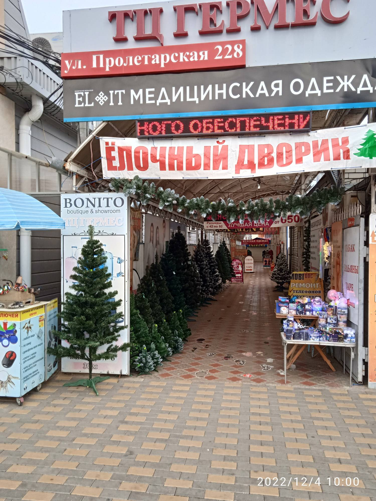

Зелёные
Классика: тёмная и светлая хвоя, густые и лёгкие модели. Литая хвоя выглядит как живая.
Искусственные ёлки в ТЦ «Гермес». Зелёные, заснеженные, голубые: выбирайте на месте и забирайте сразу.

Классика: тёмная и светлая хвоя, густые и лёгкие модели. Литая хвоя выглядит как живая.
Белые кончики лап, как после первого снега. Есть пушистые и стройные узкие.
Серебристо-голубая хвоя, как у голубой ели. Хорошо смотрится с белыми и синими игрушками.
Цена написана на бирке у каждой ёлки. Подходите, смотрите, трогайте хвою.
ТЦ «Гермес»
ул. Пролетарская, 228
Зайдите под красный баннер «Ёлочный дворик». Ёлки стоят вдоль прохода справа и слева.
Работаем каждый день с 8:00 до 19:00.
Если не можете найти нас, позвоните, подскажем дорогу.
Позвонить: +7 918 923-30-35